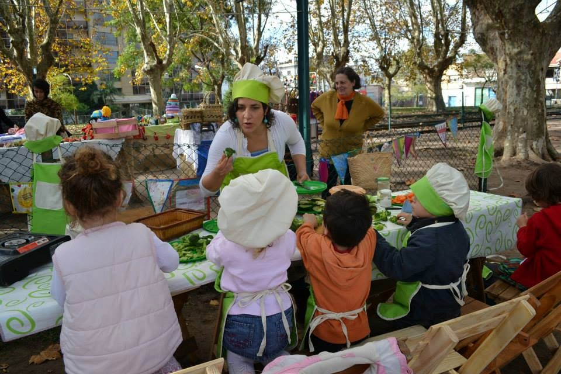

Entrevista
¡A los chicos sí les gusta comer sano!

El libro El Desafío de Nituke llegó a manos de mi hija en su cumpleaños número 4... un libro con recetas saludables repletas de vegetales para niños. Su autora e ilustradora, Alicia Bersi, es quien decidió no esquivar un tema tan controvertido y se zambulló en el mundo de la comida saludable y los niños… una zambullida de la que viene saliendo no sólo airosa sino llena de energía por enseñar y aprender con los más pequeños de la casa mediante cursos, libros y talleres itinerantes que van a las escuelas, a ferias o mediante clases a domicilio.
“Comencé a ser vegetariana a los 22 años y llegué como muchos a la Esquina de las Flores”, cuenta y asegura que por aquel entonces -15 años atrás- “no se conseguirán muchas comidas vegetarianas para comprar, así que aprendí a cocinar con las manos en la masa, a crear comidas prácticas y simples para todos los días”.
Su acercamiento con los niños empezó por casa: fue mamá vegetariana y madre Ñuñu, desde donde aprendió una crianza natural y saludable. “Tuve dificultades en amamantar y Jorge Díaz Walker nos acompañó para sacar las leches de cartoncitos y usar las leches vegetales… así escribí la ñuñu ficha de "El bebé vegetariano" para ayudar a otras madres con mi historia y recetas para el relactador”, cuenta esta profesora de cocina natural y vegetariana y responsable de Condimento la Vida.
-Las clases con los chicos comenzó con mi hija, horrorizada por el tráfico de golosinas, chatarrra y gaseosa que les daban los padres en las fiestas infantiles. Así comenzamos junto con una amiga nutricionista a dar clases de cocina teórica-practica… Las clases de cocina para padres y chicos, como el libro de "El desafío de Nituke" casi cobró vida por sí solo. Es un proyecto con la simple y profunda intención de que los chicos recuperen su intuición, la conexión con ellos mismos y realicen sus alimentos... también para ayudar a padres a cocinar los vegetales de una forma más rica y presentarlo de forma creativa, para que los chicos no puedan resistirse en probar la comida saludable.
- Hay una anécdota divertida: en un momento mi hija, Jazmín, viene de la escuela con una compañerita. La amiga, al verme preparando la mesa, dice: "¡Vamos a tomar la leche!" y Jazmín se acerca y me pregunta susurrando: "mamá: ¿qué es tomar la leche?”. “La merienda”, le digo... Recién ahí me di cuenta de que ni siquiera usábamos el concepto de “tomar la leche". Sin más explicaciones les serví un exprimido que disfrutaron sin ninguna diferencia.
Pero no todo el camino fue fácil y directo. “En el comienzo fui muy extrema: me preparaba desde la leche de soja, al tofu, las hamburguesas, el pan y las mermeladas y mi nivel de exigencia fue muy alto... colapsé del stress. Entré y salí del vegetarianismo. Todo esto me dio la posibilidad de entender los procesos, de ser respetuosos con el entorno y dejar de predicar que ésta es la verdad única. Pasé por muchas verdades, maestros, doctrinas y búsquedas, dándome cuenta hoy de que la única verdad que puedo sostener es que soy Alicia e intento tener una mirada integradora, ser madre presente y ser feliz en el proceso”.